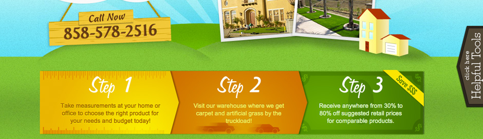
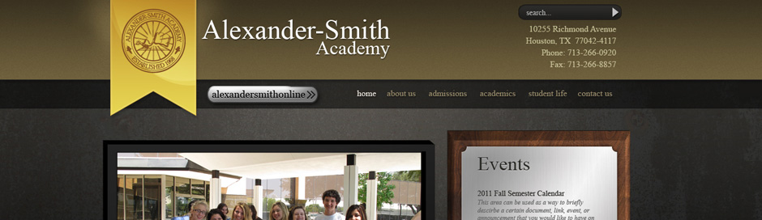
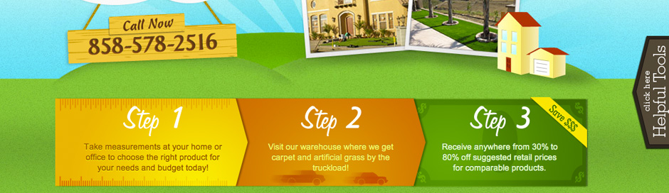
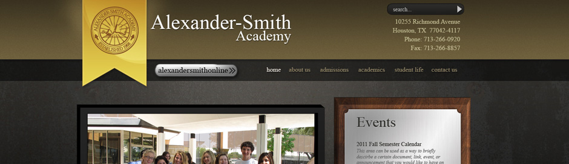

Production Work
My current job at a production facility demands that we complete our web layouts in 8 hours or less and code them in another 8 hours.
Smitty's Collision
Completed mock up. In development.
Alexander-Smith Academy
Completed mock up and coding in its entirety per customer specs. This continues to be an account which requires constant upkeep and maintenance per customer changes and requests.
Bernstein & Bernstein
One of several attorneys that come for web development. This customer wanted a strange color scheme of green, gold, and burgandy. Tried to find a happy medium in the design.
G & G Floor Coverings
Completed mock up and coding. Customer was pretty flexible as far as look and feel and actual made the joke of his business selling fake grass. So fun is good!
Ernest Howard
Dentistry firm. Only made color changes and modifications to the layout which was previously done but customer was not satsified with the original. Not dev'd.
Karen Tufte
Completed mock up to establish the look and feel of the site. Dev was completed by another designer.
Nader Shunnarah
Completed mock up and development. Customer ended up not signing with us and this site began a string of templates used by other in-house designers. URL was changed and domain released away.
Executone
Completed mock up however the customer simply never ended up signing with us. Mock up still is posted for an in-house 'inspirational' peice.
National Overhead Doors
Local Atlanta chain which was escalated through management to be completed within a day. One of our lower tier product offerings but customer loved the 'American' and 'bling' feel.
Who I once was...
I came from a very humble beginning where the only thing I knew of computers was that I didn’t have one. I created my first email address on yahoo.com when I was a senior in high school. A freshman had to help me…
Who I became...
After learning all about computer hardware, I really started contemplating about what I really wanted to do as a career. As a hobbyist artsy guy and a computer geek, what better mix than as a Web Designer!
Who I aspire to be...
Having chosen my profession and being recognized by my peers as an accomplished junior designer; I continue to push myself to be industrious and ingenious in our field of web design and development.
ninjapowa n. an ancient fighting artform; a skillset or special ability
( you don't see the fat ninja anymore, do you? he's ninja! )